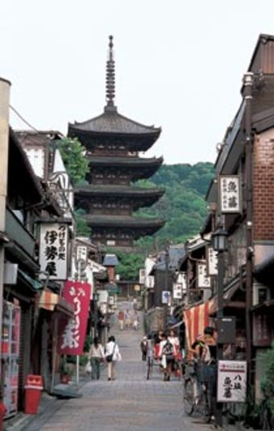

1400年前の創建とされるが、現在の塔は1440年に再建されたもの。石畳の坂道の奥に見える高さ46ｍの五重塔は、小ぶりだが東山のシンボル的存在であり、京都を代表する景観の一つにもなっている。清水寺から産寧坂を経て八坂の塔へは、古い町並みと多くの寺院を訪ねる最も京都らしい散歩道だ。.戻り
David Felipe Rico HernandezUniversidad Nacional de Colombia